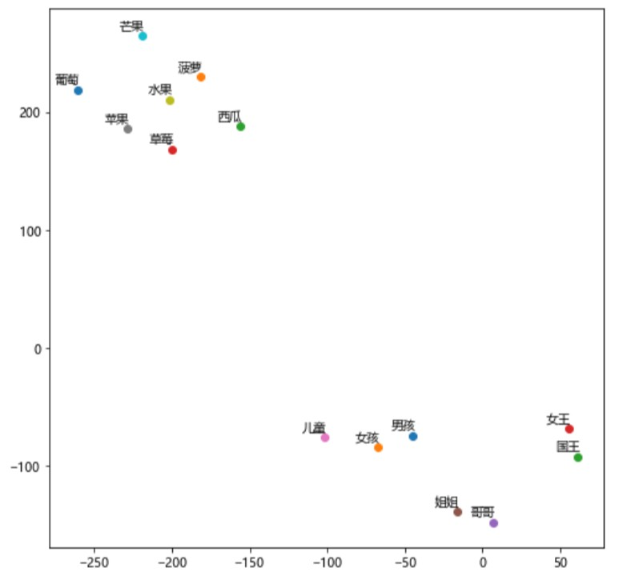

paddlenlp.embeddings¶
TokenEmbedding参数
import paddle
from paddlenlp.embeddings import TokenEmbedding
1.embedding_name
将模型名称以参数形式传入TokenEmbedding，加载对应的模型。
token_embedding = TokenEmbedding(embedding_name="fasttext.wiki-news.target.word-word.dim300.en")
- 2.unknown_token
未知token的表示，默认为[UNK]
- 3.unknown_token_vector
未知token的向量表示，默认生成和embedding维数一致，数值服从均值0标准差0.02的正态分布向量。
- 4.extended_vocab_path
扩展词汇列表文件路径，词表格式为一行一个词。如引入扩展词汇列表，trainable=True。
- 5.trainable
Embedding层是否可被训练。True表示Embedding可以更新参数，False为不可更新。
查询Embedding结果
- 1.TokenEmbedding.search
获得指定词汇的词向量。
test_token_embedding = token_embedding.search("中国")
print(test_token_embedding)
[[ 0.260801 0.1047 0.129453 -0.257317 -0.16152 0.19567 -0.074868
0.361168 0.245882 -0.219141 -0.388083 0.235189 0.029316 0.154215
-0.354343 0.017746 0.009028 0.01197 -0.121429 0.096542 0.009255
...,
-0.260592 -0.019668 -0.063312 -0.094939 0.657352 0.247547 -0.161621
0.289043 -0.284084 0.205076 0.059885 0.055871 0.159309 0.062181
0.123634 0.282932 0.140399 -0.076253 -0.087103 0.07262 ]]
- 2.TokenEmbedding.cosine_sim
计算词向量间余弦相似度
score = token_embedding.cosine_sim("中国", "美国")
print(score)
0.49586025
- 3.词向量映射到二维空间语义表示
- 